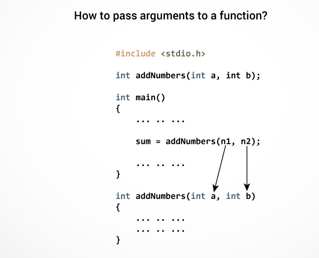
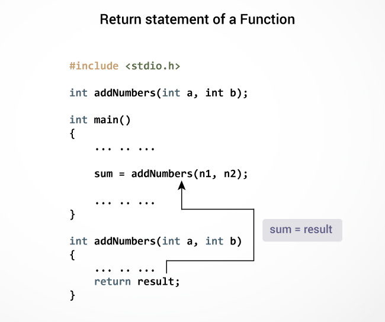
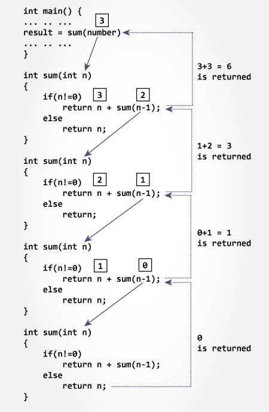

In this tutorial, you will be introduced to functions (both user-defined and standard library functions) in C programming. Also, you will learn why functions are used in programming.
A function is a block of code that performs a specific task.
Suppose, a program related to graphics needs to create a circle and color it depending upon the radius and color from the user. You can create two functions to solve this problem:
Dividing complex problem into small components makes program easy to understand and use.
Depending on whether a function is defined by the user or already included in C compilers, there are two types of functions in C programming
There are two types of function in C programming:
The standard library functions are built-in functions in C programming to handle tasks such as mathematical computations, I/O processing, string handling etc.
These functions are defined in the header file. When you include the header file, these functions are available for use. For example:
The printf() is a standard library function to send formatted output to the screen (display output on the screen). This function is defined in "stdio.h" header file.
There are other numerous library functions defined under "stdio.h", such as scanf(), fprintf(), getchar() etc. Once you include "stdio.h" in your program, all these functions are available for use.
As mentioned earlier, C allow programmers to define functions. Such functions created by the user are called user-defined functions.
You can create as many user-defined functions as you want.
#include <stdio.h>
void functionName()
{
... .. ...
... .. ...
}
int main()
{
... .. ...
... .. ...
functionName();
... .. ...
... .. ...
}
The execution of a C program begins from the main() function.
When the compiler encounters functionName(); inside the main function, control of the program jumps to
void functionName()
And, the compiler starts executing the codes inside the user-defined function.
The control of the program jumps to statement next to functionName(); once all the codes inside the function definition are executed.
Remember, function name is an identifier and should be unique.
Here is an example to add two integers. To perform this task, an user-defined function addNumbers() is defined.
#include <stdio.h>
int addNumbers(int a, int b); // function prototype
int main()
{
int n1,n2,sum;
printf("Enters two numbers: ");
scanf("%d %d",&n1,&n2);
sum = addNumbers(n1, n2); // function call
printf("sum = %d",sum);
return 0;
}
int addNumbers(int a,int b) // function definition
{
int result;
result = a+b;
return result; // return statement
}
A function prototype is simply the declaration of a function that specifies function's name, parameters and return type. It doesn't contain function body.
A function prototype gives information to the compiler that the function may later be used in the program.
returnType functionName(type1 argument1, type2 argument2,...);
In the above example, int addNumbers(int a, int b); is the function prototype which provides following information to the compiler:
The function prototype is not needed if the user-defined function is defined before the main() function.
Control of the program is transferred to the user-defined function by calling it.
functionName(argument1, argument2, ...);
In the above example, function call is made using addNumbers(n1,n2); statement inside the main().
Function definition contains the block of code to perform a specific task i.e. in this case, adding two numbers and returning it.
returnType functionName(type1 argument1, type2 argument2, ...)
{
//body of the function
}
When a function is called, the control of the program is transferred to the function definition. And, the compiler starts executing the codes inside the body of a function.
In programming, argument refers to the variable passed to the function. In the above example, two variables n1 and n2 are passed during function call.
The parameters a and b accepts the passed arguments in the function definition. These arguments are called formal parameters of the function.

The type of arguments passed to a function and the formal parameters must match, otherwise the compiler throws error.
If n1 is of char type, a also should be of char type. If n2 is of float type, variable b also should be of float type.
A function can also be called without passing an argument.
The return statement terminates the execution of a function and returns a value to the calling function. The program control is transferred to the calling function after return statement.
In the above example, the value of variable result is returned to the variable sum in the main() function.

return (expression);
For example,
return a;
return (a+b);
The type of value returned from the function and the return type specified in function prototype and function definition must match.
void recurse() { ... .. ... recurse(); ... .. ... } int main() { ... .. ... recurse(); ... .. ... }

The recursion continues until some condition is met to prevent it.
To prevent infinite recursion, if...else statement (or similar approach) can be used where one branch makes the recursive call and other doesn't.
#include <stdio.h>
int sum(int n);
int main()
{
int number, result;
printf("Enter a positive integer: ");
scanf("%d", &number);
result = sum(number);
printf("sum = %d", result);
return 0;
}
int sum(int num)
{
if (num!=0)
return num + sum(num-1); // sum() function calls itself
else
return num;
}
Output
Enter a positive integer:3
sum = 6
Initially, the sum() is called from the main() function with number passed as an argument.
Suppose, the value of num is 3 initially. During next function call, 2 is passed to the sum() function. This process continues until num is equal to 0.
When num is equal to 0, the if condition fails and the else part is executed returning the sum of integers to the main() function.

Recursion makes program elegant and more readable.However, if performance is vital then, use loops instead as recursion is usually much slower.
Note that, every recursion can be modeled into a loop.